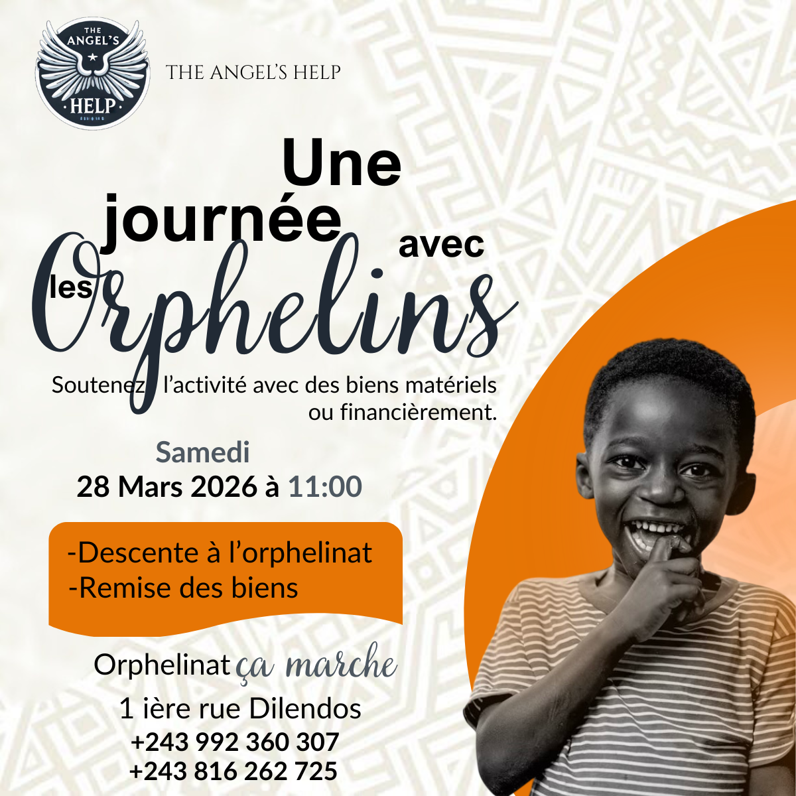
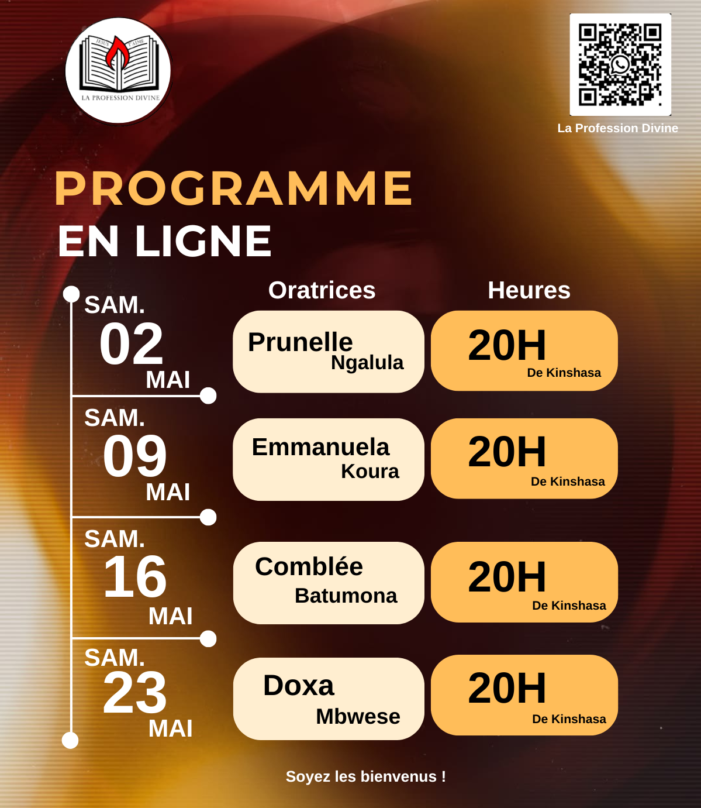
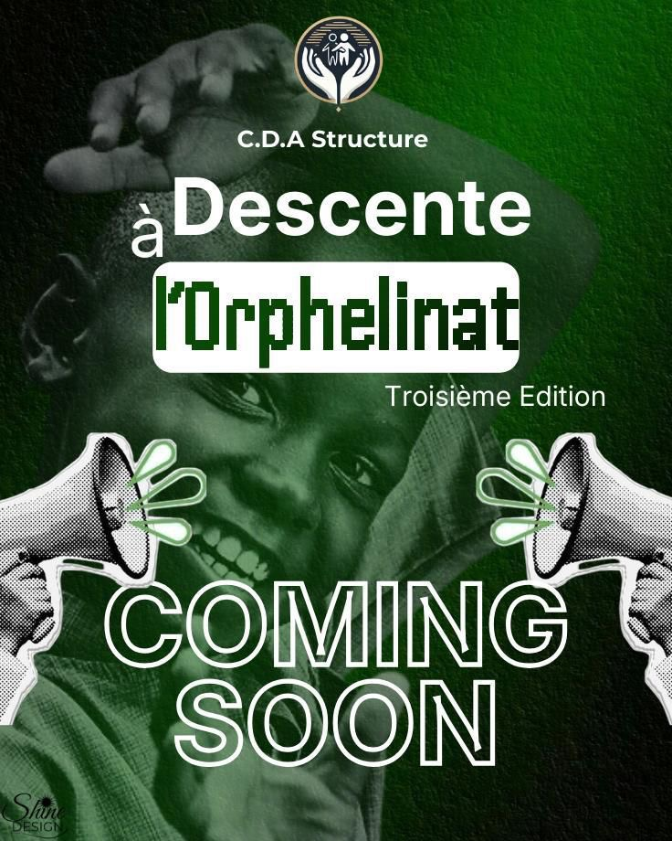
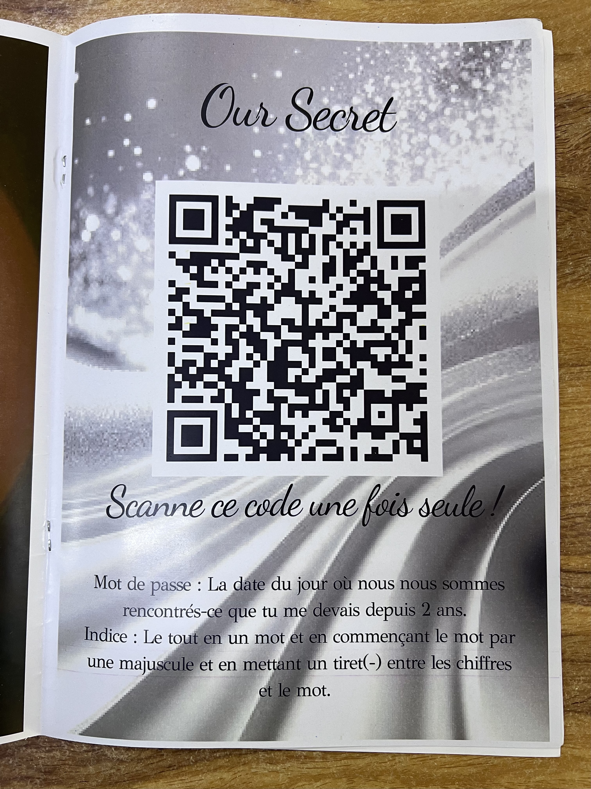

Une bonne conception est une manière de s'exprimer, et c'est ce qui distingue Prunelle des autres.
Ses créations mélangent douceur, caractère et émotion, avec une identité visuelle aussi élégante qu'audacieuse.
A travers chaque détail, Prunelle transforme des idéées simples en univers uniques qui captent l'attention et marquent les esprits.
Elle ne crée pas seulement du design : elle crée une sensation,une histoire, une présence.
Je suis Prunelle Ngalula,chrétienne, servante de Dieu, auteure en devenir , CEO de Shine Design, étudiante dans la faculté des sciences informatiques à l'Université Protestante au Congo et passionnée par le design graphique,la cybersécurité et le cloud computing. A travers mes créations, j'aime transformer des idées en visuels élégants, détaillés et porteurs de sens.
Je réalise des affiches,magazines personnalisés, couvertures de livres, invitations virtuelles et bien plus encore, avec une attention particulière aux détails et à l'expérience du client. L'intégration de QR codes interactifs dans certains projets fait aussi partie de ce qui rend mon univers unique.
Mon objectif ne se limite pas à créer quelque chose de beau:je veux transmettre une émotion, satisfaire chaque client et glorifier Jésus-Chrit à travers mon travail. Je crois profondément que l'âge n'est qu'un chiffre et que Dieu peut utiliser n'importe qui pour impacter le monde.
Ce n'est plus moi qui cherche à briller, c'est la grâce de Dieu qui rayonne à travers moi.




Au travers de Shine Design
Mes affiches attirent l'attention grâce à des images audacieuses, des textes percutants et des visuels de la marque.
Je crée des couvertures de livres uniques et cativantes qui reflètent l'essence de votre histoire et attirent imm"diatement le regard des lecteurs.
Des magazines uniques et sur mesure, pensés pour raconter votre histoire à travers un design créatif, harmonieux et captivant.
L'option QR code est aussi de la partie, pensé afin de rendre le magazine encore plus significatif
Je crée des invitations virtuelle élégantes et personnalisés pour tous vos événements, avec un design adapté à votre thème et votre style.
Whatsapp:0814735870 ou Whatsapp
Instagram:Shine_design001 ou Instagram
Instagram:_nelle_ng ou Instagram
ou contactez nous autrement :
Contactez-moi